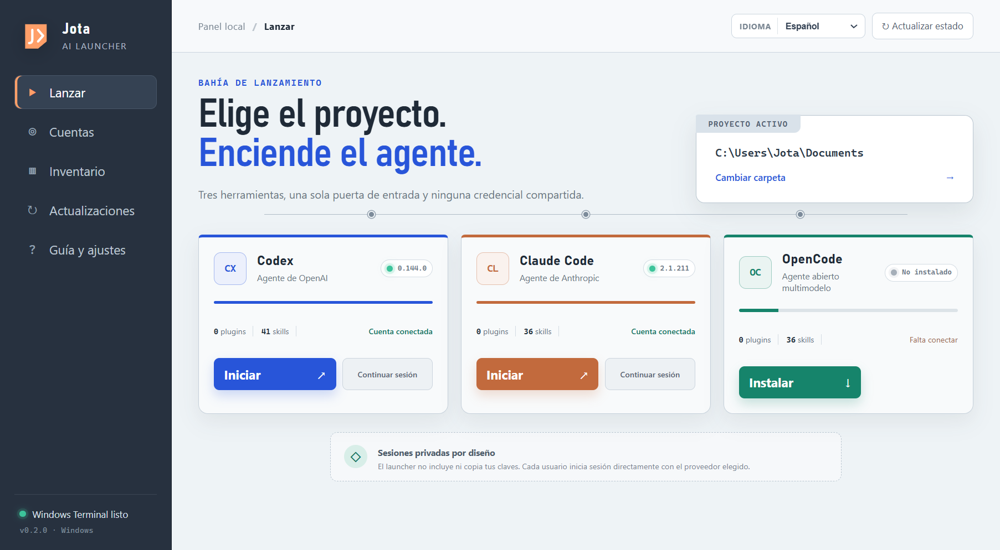
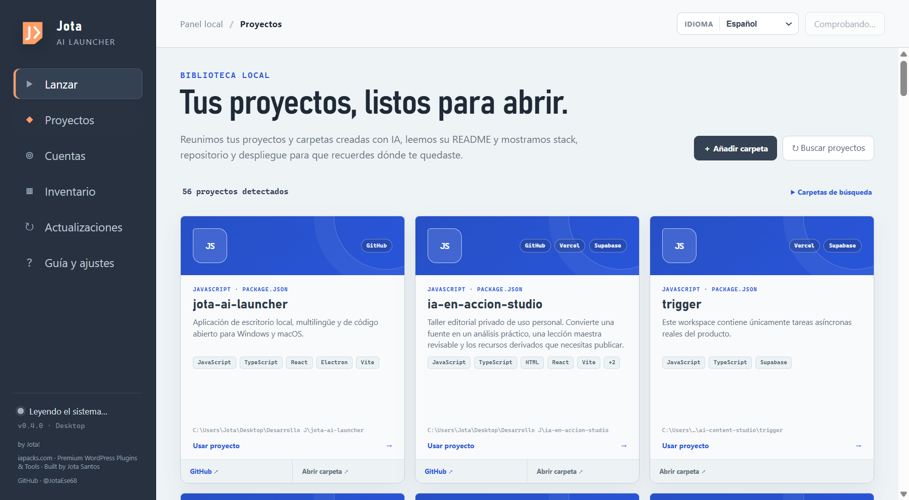

The right project is always visible
Opening an agent in the wrong folder costs more than a few seconds: it changes the context the agent receives and may lead it to edit the wrong thing. The launcher makes that choice explicit before you begin.
Built for developing with AI, not managing it
If you move between Codex, Claude Code, and OpenCode, starting a session should not mean remembering folders, commands, accounts, and versions. Jota AI Launcher puts that starting point on one screen.
● Visible terminal. The agent opens inside the project you just selected.

The story behind it
I would open PowerShell, find the right folder, check which account was connected, try to remember how to resume a session, and see whether the CLI was current. None of those jobs was difficult. Together, they were noise.
When you develop with AI, the valuable work is holding onto the product's intent and deciding what should happen next. Every window switch and memorized command takes away a small piece of that attention. I wanted it back.
So I did not build another assistant that promised to think for me. I built a small, honest tool that helps me get to the right place, with the right agent, and begin.
Benefits you notice while working
It does not try to replace the way you develop. It organizes the starting point so your attention can stay with the code, the product, and the decisions that matter.
Opening an agent in the wrong folder costs more than a few seconds: it changes the context the agent receives and may lead it to edit the wrong thing. The launcher makes that choice explicit before you begin.
Codex, Claude Code, and OpenCode have different strengths and workflows. A common starting point lets you choose for the task, not for the friction of opening each tool.
The launcher is not a middleman and has no API-key vault. Each CLI keeps its own session; someone else who installs the app must connect their own credentials.
Versions, account state, plugins, skills, and MCP servers appear in one inventory. Knowing your environment prevents blind troubleshooting and unnecessary updates.
How it works
Everything happens in front of you. The launcher organizes; the terminal and each agent remain the tools you already know.
Select a folder yourself or pick a card from the library of projects detected on your computer.
See which agents are installed, their version, account status, and the extensions available to them.
Choose start or resume. A visible terminal opens in the selected folder, ready for work.

Local library
Each card summarizes purpose from the README, stack, GitHub, and services such as Vercel, Netlify, or Render. It also includes AI-built apps, plugins, and work that exists only as a local folder.
Who it is for
Vibe coder, developer, designer who codes, independent founder, or someone still learning: the shared point is using AI to turn an idea into something that works.
Verifiable trust
A desktop application deserves more explanation than a download button. That is why the source, builds, and checks are public.
No sales pitch. No registration.
Jota AI Launcher is free and open source. Download it, inspect the code, adapt it, or simply keep the idea: good tools are allowed to be quiet.